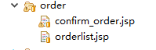
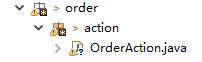
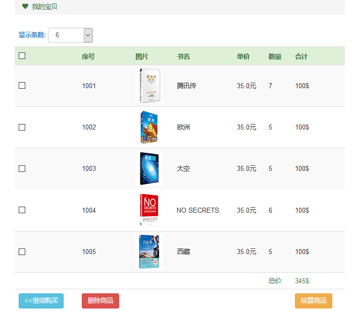
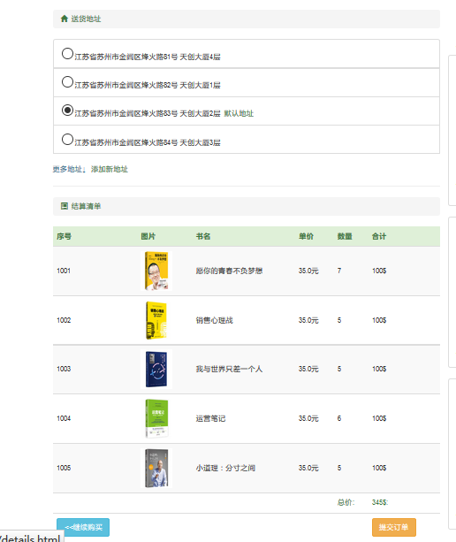
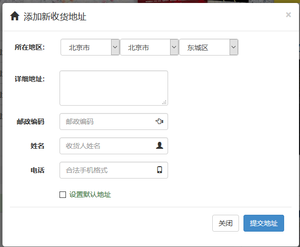

6.Day06
6.1.任务单详细说明：
6.1.1.功能设计
此任务单任务主要完成 订单的提交和查询。
订单模块视图： 
confirm_order.jsp 订单确认提交页面 orderlist.jsp 订单列表页面
订单模块控制器实现： 
OrderAction.java 订单的控制器
再次强调，以上的图示只是一个参考，你完全可以自行定义任意的Action
业务层接口定义：【仅供参考】
public interface IOrderService {
/**
* 保存订单对象
*
* @param o
*/
public void save(Order o);
/********
* 删除订单
*
* @param o
*/
public void delete(Order o);
/****
* 按主键查询
*
* @param id
* @return
*/
public Order findById(Long id);
/**
* 根据用户查询订单
*
* @param user
* @param now
* @param size
* @return
*/
public PageBean<Order> queryByPage(User user, int now, int size);
}
只做为代码参考，如果看不懂，请及时咨询项目经理或身边的同学。
业务层实现：请自行实现。
数据访问层接口：【IOrderDao.java】
public interface IOrderDao {
/**
* 保存订单
* @param o
*/
public void save(Order o);
/*****
* 按主键查询
* @param id
*/
public Order findById(Long id);
/****
* 删除
* @param o
*/
public void delete(Order o);
/**
* 分页查询订单
* @param user
* @param now
* @param size
* @return
*/
public List<Order> selectByPage(User user,int now, int size);
/******
* 获取指定用户的总订单数
* @return
*/
public int rowCount(User user);
}
数据访问层实现：请自行实现。
控制层代码参考：【仅供参考】
@WebServlet(urlPatterns = "/permission/order/*")
public class OrderAction extends HttpServlet {
/**
*
*/
private static final long serialVersionUID = 8771778492874292298L;
/** 业务接口 */
private IOrderService orderService;
private IUserService userService;
private IBookService bookService;
private IShoppingCart memoryCart;
/** 请求URL资源常量 */
private static final String _TO_BALANCE = "/balance";// 提交订单
/*private static final String _SAVE_ADDRESSAJAX = "/saveAddress";// 保存地址
*/ private static final String _SAVE_ORDER = "/saveOrder";// 保存订单
private static final String _TO_ORDERLIST = "/myorders";// 跳转至订单页面
public OrderAction() {
super();
this.orderService = (IOrderService) BeanFactory.getBean("orderService");
this.userService = (IUserService) BeanFactory.getBean("userService");
this.bookService = (IBookService) BeanFactory.getBean("bookService");
}
@Override
protected void service(HttpServletRequest request, HttpServletResponse response)
throws ServletException, IOException {
....
....
控制层的具体实现，请自行实现，上面的代码片段是采用一个Action来处理多个不同的请求的情况，你可以根据你自己的情况来开发，不必拘泥与上面的代码
JSP页面的代码开发：再次查看购物车页面。 
点击结算按钮： 提交结算核心代码：【仅供参考，注意url的变化】
function balanceItem(){
var count = 0;
var ids = "";
var checks = document.getElementsByName("itemCheck");
for(var i=0;i<checks.length;i++){
if(checks[i].checked){
count++;
ids += checks[i].value+":";
}
}
if(count > 0){
window.location = "${path }/permission/order/balance?ids="+ids.substring(0,ids.length-1);
}else {
alert("请至少选中一个商品!");
}
}
注：这段代码是在购物车页面中
后台控制器逻辑：
case _TO_BALANCE:
String flag = request.getParameter("flag");
PageBean<Book> page = bookService.queryByCondition(1, 3, "猜你喜欢");
/** 接收发送过来的参数 */
String ids = request.getParameter("ids");
String[] arr = ids.split(":");// 把接收到的ID分开成数组
/**
* 构建一个商品详情的集合，遍历Id数组，通过id查找每个商品详情
* 并且将得到的商品详情放入商品详情的集合，并且转发到确认订单的页面
*/
List<OrderItem> items = new ArrayList<>();
for (String id : arr) {
OrderItem item = shoppingCart.find(Long.valueOf(id));
items.add(item);
}
if(flag == null){
List<Address> addrs = new ArrayList<>();
for(int i =0;i<3;i++){
addrs.add(addresses.get(i));
}
request.setAttribute("address", addrs);
}
request.setAttribute("ids", ids);
request.setAttribute("items", items);
request.setAttribute("address", addresses);
request.setAttribute("youlike", page);
forward(request, response, true, "/WEB-INF/jsp/user/confirm_order.jsp");
break;
通过这段控制器代码，可以把订单确认页面呈现给用户，如下： 订单确认提交页面: 
注：如果没有地址，请点击使用新地址，添加一个新地址
点击“使用新地址”弹出一个添加新地址的页面，如下：【仅供参考】  其中，省、市、区要通过AJAX实现动态级联 邮编要进行有效性验证 电话要进行有效性验证
如果勾选 设置默认地址 的话，则将此新增地址为默认地址，之前的默认地址标记清楚。
控制层代码片段如下：【仅供参考】
case _SAVE_ADDRESSAJAX:
PrintWriter out = response.getWriter();
/** 获取页面发送过来的参数信息 */
/* String baseAddress = request.getParameter("baseAddress"); */
String province = request.getParameter("province");
String city = request.getParameter("city");
String area = request.getParameter("area");
String baseAddress = province + "," + city + "," + area;
String detailAddress = request.getParameter("address_detail");
String reciver = request.getParameter("reciverName");
String code = request.getParameter("code");
String tel = request.getParameter("tel");
String isDefault = request.getParameter("defaultAddress");
isDefault = isDefault==null?"0":isDefault;
List<Address> addrs = userService.getAddressByUser(user);
for(int i =0;i<=addrs.size()-1;i++){
addrs.get(i).setIsDefault(0);
userService.updAddress(addrs.get(i));
}
try {
// 创建一个地址对象,并且封装对象
Address address = new Address();
address.setCode(code);
address.setReceiver(reciver);
address.setDetail(detailAddress);
address.setPhone(tel);
address.setAddr(baseAddress);
address.setIsDefault(Integer.parseInt(isDefault));
address.setUser(user);
userService.addAddress(address);
// 成功返回'1'
out.print("1");
} catch (Exception e) {
// TODO: handle exception
// 失败返回'0'
out.print("0");
e.printStackTrace();
}
break;
注： 实现此弹出窗口中的后台的 业务层、持久层请与上面的业务保持一致，此处不再讲诉
在地址选择好后， 点击 提交订单按钮： 后台的控制器的代码片段如下：【仅供参考】
case _SAVE_ORDER:
/* String addressId = request.getParameter("addressId");*/
/**获取页面传来的参数*/
String bids = request.getParameter("bids");
String[] bid = bids.split(":");
/**封装数据对象*/
Set<OrderItem> orderItems = new HashSet<>();
Order order = new Order();
for(Address add : addresses){
/*order = new Order();*/
for(String bookId : bid){
/* orderItems = new HashSet<>();*/
OrderItem orderItem = shoppingCart.find(Long.valueOf(bookId));
orderItem.setOrder(order);
orderItems.add(orderItem);
}
order.setItems(orderItems);
order.setUser(user);
order.setCreateDate(new Date());
order.setOrderNo("TZ"+new Date().getTime());
order.setOrderStatus(OrderStatus.NO_PAY);
order.setPhone(user.getTel());
order.setAddr(add.getAddr());
order.setReceiver(add.getReceiver());
}
/**保存订单*/
orderService.save(order);
shoppingCart.clear();
forward(request, response, false, "/permission/order/myorders");
break;
业务层和数据访问层参考上面的接口，此处不再讲诉。
订单列表操作： 通过页面导航点击 我的订单 按钮时，可以查看所有订单： 点击 我的订单 发送请求到控制器: 控制器的代码片段如下：【仅供参考】
case _TO_ORDERLIST:
/**接受页面参数*/
String now = request.getParameter("pageNow");
String size = request.getParameter("pageSize");
/**默认当前页为第一页，默认每页显示八条数据*/
now = now == null?"1":now;
size = size == null?"8":size;
/**根据参数获取分页对象*/
PageBean<Order> paging =(PageBean<Order>) orderService.queryByPage(user, Integer.parseInt(now),Integer.parseInt(size));
/**转发到订单列表界面*/
request.setAttribute("paging", paging);
forward(request, response, true, "/WEB-INF/jsp/order/orderlist.jsp");
break;
转发到orderlist.jsp显示。 业务层和数据访问层参考前面 接口，此处不再讲诉。
订单明细： 注： 如果原型界面或你自己想把订单和订单明细分开设计，则此处你需要再次编写查看订单明细的控制器代码 和 相关的JSP页面
具体的代码片断此处不再讲述，可以按自己的理解进行开发。